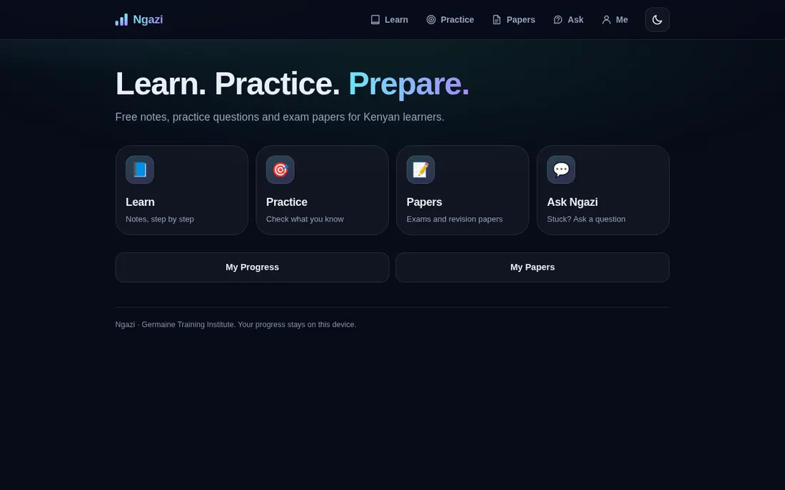
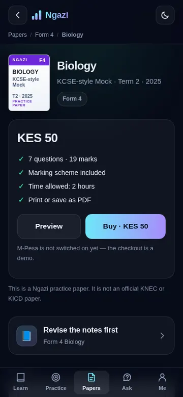

Learning platform · Germaine Training Institute · 2026
Ngazi
A free, step-by-step learning platform for Kenyan learners: notes, practice questions, a question-answering helper and a library of printable practice papers — built to load quickly on a phone.
- One simple app, four jobs: Learn · Practice · Papers · Ask, with a bottom tab bar on phones.
- 24 topics from Grade 5 to Form 4, and 515 practice papers with marking schemes, previews and print-to-PDF layout.
- Search that respects the curriculum: “Class 8” (8-4-4) never mixes with “Grade 8” (CBC), and “f4 maths mock” just works.
- Merged two projects into one: an earlier paper-shop prototype was converted into the live platform's data format; the paper index was compressed from 330 KB to 54 KB (about 7 KB over the wire).
- Honest by design: practice papers are labelled as Ngazi originals (never as official KNEC papers), and the payment checkout is a clearly labelled demo until M-Pesa is connected.
- Tested: 93 automated Playwright checks — every page type, search results, checkout flow, and no sideways scrolling from 320 px to 1280 px.
HTMLCSSVanilla JavaScriptJSON data designPrint CSSPlaywrightApache / cPanel

